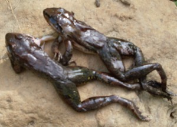

bakbak1 
/bakbak/
n.
“frog”
n.
a generic name of all kinds of frog (edible or unedible)
Ka bakbak sabeka ne ngalap ne diyè eg-ugpè te weyig piru due timpu ne diyè eg-ugpè te gakapan. Egpekeiling seini te beuu ne due hep-at ne belad piru warè baley rin ne iling te beuu. Masulug ka batek kayi su due meitem, meebul, balangbangan, egmakalawag wey warè degma nekeg-iling te karakel. Meila seini su eg-umbetut ke egkaalew taman egsuksuk e diyè te mabbenes.
Hendei ka nekeutel te bakbak?
Where do you catch a frog?
Egpaneng-ew a kuntee su eggirehe buwa ka bakbak.
I will hunt tonight because frogs maybe many.
Warad iya neutel ku ne bakbak su bulanen nahud.
I wasn't able to caught frogs becaue the moon shines.
Egkeupian a ne egkeen te bubun te bakbak su dakel ka sappu.
I wanted to eat the legs of the frogs because it's well growing.
Wrd.Gloss: frog
Eng. frog; toad
Tag. palakâ
Ceb. bakì
Ilo.: tukák
Tigwanon: bakbak
Binukid: bakbak
Sarangani: bakbak
WBM: bakbak
Ilianen: bakbak
Kinamigin: bakbak
Tagbawa: bakbak
Cotabato Manobo: bakbak
Tasaday: bakbak
Obo: bakabak
Proto: bakbak
OCM: Fauna (136)
DDP: Amphibian (1.6.1.4)
Online dict status: -
Usage level: M
v.
for a group (egbebakbak, migbebakbak/imbebakbak, agent, eg><ø-rdpCV-) to dance with a bakbak dance
Eng. dance, to
Online dict status: -
Usage level: R
Updated by: RJH,AAA,QDL,RJH
Last updated: 21/Dec/2011
"bakbak" in text "Cooking in Bamboo"
This page last updated: 28-Dec-2019
Copyright © 2009-2014, Matigsalug Language Christian Association, Inc